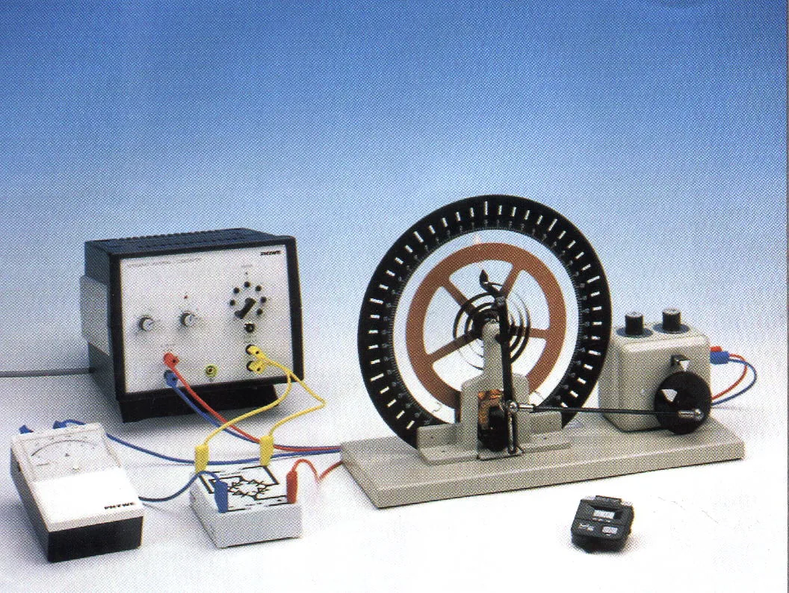

El péndulo de Pohl permitirá estudiar el movimiento oscilatorio libre, el amortiguado y el forzado. Se determinarán las frecuencias características de las oscilaciones libres, el decrecimiento exponencial de amplitud en las oscilaciones amortiguadas y las curvas de resonancia de las oscilaciones forzadas para diferentes valores de amortiguamiento.
Fundamento teórico
El péndulo de Pohl (ver la figura 3.1) consta de una rueda giratoria que oscila respecto de su posición de equilibrio, marcada por una flecha. La fuerza recuperadora que permite la oscilación se debe a un muelle helicoidal. Conectado al péndulo hay un freno magnético que actuará como amortiguador de la oscilación, y un motor que actuará como forzamiento. De este modo, el péndulo de Pohl permite un estudio de las oscilaciones libres, amortiguadas y forzadas.
Oscilaciones libres
Podemos considerar el péndulo de Pohl libre como una corona circular plana que gira respecto a un eje perpendicular a ella, el eje z, que pasa por su centro de masas. La rueda está conectada a un muelle de tipo helicoidal, de tal manera que, cuando se separa la rueda de su punto de equilibrio un ángulo Φ, el muelle trata de devolverla a su posición de equilibrio con una fuerza proporcional a la distancia dada por la ley de Hooke. El movimiento resultante, si no hay amortiguamiento, se puede tomar como un movimiento armónico simple en la variable angular Φ. Tal sistema se conoce como péndulo de torsión.
Para estudiar el movimiento del péndulo de torsión libre, consideramos un sistema de referencia en que la corona circular está en el plano xy, el centro de masas O es el origen del sistema de referencia, y la corona gira respecto al eje z. Consideremos las ecuaciones de movimiento de un sólido rígido en rotación. El momento angular de la corona respecto a su centro de masas, que es el origen, es la suma de los momentos angulares de cada punto de la corona respecto al centro de masas, esto es,
L=i=1∑Nri×pi=i=1∑Nmiri×vi,(3.1)
donde ri=xii+yij es el vector posición del punto i respecto al centro de masas y vi es su velocidad. Al girar, todos los puntos de la corona se mueven con la misma velocidad angular ω, de modo que la velocidad de cada punto es
vi=ω×ri,(3.2)
donde ω=ωk, por girar la corona respecto al eje z. Insertando la ecuación 3.2 en 3.1, se obtiene
siendo Iz el momento de inercia de la corona respecto al eje z. Para aplicar las leyes de Newton al movimiento de rotación de un cuerpo rígido, se deriva respecto al tiempo el momento angular. Por un lado, de 3.1,
donde Fi es la fuerza exterior aplicada en el punto i del cuerpo rígido, Mi=ri×Fi es el momento de la fuerzaFi respecto al centro de masas, y M es el momento total de las fuerzas aplicadas al cuerpo rígido con respecto al centro de masas. Por otro lado, de 3.3,
dtdL=Izdtdωk.(3.5)
Igualando las ecuaciones 3.4 y 3.5, se llega a
M=Izdtdωk,(3.6)
que es la ecuación del movimiento de rotación de la corona.
Supongamos que separamos la corona de su punto de equilibrio un ángulo Φ, medido respecto a la vertical (eje y). El muelle helicoidal ejerce entonces un momento de fuerza recuperador que es proporcional al desplazamiento angular Φ y que está dado por
M=−k∗Φk,(3.7)
donde k∗ es una constante de proporcionalidad. Teniendo en cuenta la ecuación 3.6, donde la velocidad angular es ω=dΦ/dt, el movimiento angular del péndulo de torsión satisface
Izdt2d2Φ+k∗Φ=0.(3.8)
Como puede verse, el movimiento angular de un péndulo de torsión libre es un movimiento armónico simple, cuya solución está dada por
Φ=Φ0cosω0t,(3.9)
donde Φ0 es la amplitud del movimiento, que corresponde con la desviación inicial suponiendo que la velocidad inicial es nula, y
ω0=Izk∗,(3.10)
es la frecuencia natural de la oscilación.
Oscilaciones amortiguadas
Cuando, en un oscilador libre, se tienen en cuenta pérdidas de energía debidas a fuerzas de rozamiento, se obtiene una oscilación amortiguada. En el caso del péndulo de Pohl, se dispone de un freno magnético que produce un momento de una fuerza de amortiguación Mak que es proporcional a la velocidad angular,
Ma=−CdtdΦ,(3.11)
donde C es un factor de proporcionalidad que depende de la intensidad de corriente que alimente al freno magnético. Entonces, la ecuación de movimiento del péndulo es, introduciendo el momento amortiguador 3.11 como un nuevo sumando en la ecuación del caso libre 3.8,
Izdt2d2Φ+CdtdΦ+k∗Φ=0.(3.12)
Utilizando la frecuencia natural de la oscilación ω0 dada por la ecuación 3.10, y definiendo el coeficiente de amortiguamientoξ como
ξ=2IzC,(3.13)
la ecuación 3.12 se puede reescribir
dt2d2Φ+2ξdtdΦ+ω02Φ=0.(3.14)
Cuando se resuelve esta ecuación, se obtienen distintos tipos de soluciones para cada uno de los tres casos posibles siguientes.
Sobreamortiguamiento: Si ξ2>ω02, entonces el péndulo retorna lentamente a su posición de equilibrio sin llegar a oscilar en torno a ella.
Amortiguamiento crítico: Si ξ2=ω02, el resultado es muy parecido al anterior, aunque la convergencia hacia el equilibrio es un poco más rápida.
Subamortiguamiento: Si ξ2<ω02, entonces el péndulo oscila en torno a la posición de equilibrio aunque la amplitud de oscilación va decayendo exponencialmente en el tiempo.
Debido a los valores numéricos de los dispositivos experimentales usados en esta práctica, nuestra oscilación es subamortiguada. La solución de la ecuación 3.14 en el caso subamortiguado es
Φ(t)=Φ0exp(−ξt)cosωt,(3.15)
con
ω=ω02−ξ2.(3.16)
Por tanto, se obtiene que la frecuencia ω del oscilador amortiguado es menor que la del oscilador libre ω0, y que la amplitud del oscilador amortiguado decrece exponencialmente con el tiempo. De la ecuación 3.15 se deduce que la razón entre las amplitudes de dos oscilaciones sucesivas es una constante K, con
K=Φ(t+T)Φ(t)=exp(ξT),(3.17)
siendo T=2π/ω el período de la oscilación. A la constante K se le denomina razón de amortiguamiento, y a la cantidad
lnK=ξT=ln(Φ(t+T)Φ(t)),(3.18)
se le llama decrecimiento logarítmico.
Oscilaciones forzadas
En las oscilaciones amortiguadas, la amplitud y, por tanto, la energía, decrecen con el tiempo hasta que la oscilación muere. Para mantener en marcha el péndulo de torsión, se utiliza un motor que proporciona un momento de fuerzas externo periódico del tipo Mf=M0cosΩt, donde M0 es una constante y Ω es la frecuencia del forzamiento. Al introducir este nuevo momento, la ecuación 3.14 se transforma en
dt2d2Φ+2ξdtdΦ+ω02Φ=f0cosΩt,(3.19)
donde f0=M0/Iz se llama amplitud del forzamiento. Esta es la ecuación de un oscilador forzado. La solución de esta ecuación de movimiento tiene una componente complicada, llamada solución transitoria, que está llamada a desaparecer tras un intervalo inicial de tiempo, pero tiene una nueva componente, que permanece indefinidamente en el tiempo, llamada solución estacionaria, que está provocada por la presencia del momento de fuerzas externo, y que es del tipo armónico simple, pero tal que la frecuencia del movimiento es igual a la frecuencia de forzamiento Ω,
Φ(t)=Acos(Ωt+δ).(3.20)
La amplitud de la solución es
A=(ω02−Ω2)2+4ξ2Ω2f0,(3.21)
y la fase inicialδ viene dada por:
δ=arctan(ω02−Ω2−2ξΩ).(3.22)
Observando detenidamente las ecuaciones 3.20-3.22 se obtienen varias conclusiones sobre las características de las oscilaciones forzadas:
Cuanto mayor sea el coeficiente de amortiguamiento ξ, menor es la amplitud de las oscilaciones.
Existe un valor Ωr de la frecuencia de forzamiento tal que, para valores fijos de f0, ω0, ξ, cuando Ω=Ωr, la amplitud de las oscilaciones se hace máxima. Este fenómeno se conoce como , el valor Ωr se llama frecuencia de resonancia y la amplitud máxima Ar=A(Ωr) se llama amplitud de resonancia. Para calcular la frecuencia de resonancia, se halla el máximo de la función amplitud A derivando con respecto a la variable Ω, y tomando f0, ω0, ξ como constantes. Al igualar a cero la derivada, el máximo aparece en
Ωr=ω02−2ξ2,(3.23)
y la amplitud de resonancia resulta
Ar=2ξω02−ξ2f0.(3.24)
Si se construyese un péndulo de torsión sin amortiguamiento (ξ=0), y a éste se le forzara a oscilar a la frecuencia de resonancia (Ω=Ωr), la amplitud de las oscilaciones sería infinita, es decir, la amplitud de resonancia en ausencia de amortiguamiento es infinita.
Para frecuencias de excitación Ω mucho menores que ω0, la oscilación del péndulo está en fase (δ≈0) con el momento de fuerzas externo de excitación. Para frecuencias Ω mucho mayores que ω0, la oscilación del péndulo está en oposición de fases (δ≈π) con respecto a la excitación externa. En el caso Ω=ω0, el desfase es δ=π/2, y se dice que ambos movimientos están en cuadratura.
Montaje experimental

Figura 3.1: Montaje experimental.
El aspecto general del montaje es el de la figura 3.1. El freno magnético es un electroimán que, alimentado con corriente continua (DC), induce corrientes de Foucault sobre la rueda giratoria, provocando un momento de frenado sobre ella. Dado que la única salida de DC que tiene la fuente se va a reservar para la alimentación del motor de oscilaciones forzadas, se hace necesario el uso de un rectificador que convierte en continua la corriente alterna (AC) de la otra salida de la fuente. La intensidad IB suministrada al freno es medida por un amperímetro colocado en serie.
ADVERTENCIA IMPORTANTE: El freno magnético soporta una intensidad máxima de 1A. Para no sobrepasar esta cantidad de corriente rectificada, es necesario no sobrepasar los 10V de alterna en la salida de la fuente.
Antes de observar las oscilaciones libres y amortiguadas debe ajustarse la posición de reposo de la flecha de la rueda giratoria de modo que coincida con la posición cero de la escala. Para conseguir esto se puede girar con la mano el disco del motor. Cuando no entre corriente al freno (IB=0), podremos observar oscilaciones libres (en realidad son amortiguadas por el propio rozamiento del péndulo, pero este rozamiento es muy pequeño). A medida que se hace crecer la corriente IB (no sobrepasar 1A), se pueden observar oscilaciones cada vez más amortiguadas. Para medir el decrecimiento de las amplitudes de las oscilaciones, se puede deflectar la rueda giratoria con la mano hacia un lado, y leer aproximadamente sobre la escala las sucesivas amplitudes hacia los dos lados. Si resulta difícil visualizar la amplitud de oscilación, se puede probar disminuyendo la desviación inicial para que la flecha se mueva un poco más lenta. Para medir los períodos se hará con un cronómetro.
Para las oscilaciones forzadas, la salida de corriente continua de la fuente de potencia se conecta a las dos hembras superiores del motor DC de oscilaciones forzadas. El motor no debe ser alimentado con más de 650mA de intensidad. Por ello, debe colocarse el dial de intensidades DC de la fuente aproximadamente a 0,65A. Tomando esta precaución, ya puede girarse el dial de tensiones hasta su posición de máximo valor.
La frecuencia de las oscilaciones forzadas puede controlarse con los dos diales de la parte superior del motor. El derecho es para un ajuste aproximado y el izquierdo para el ajuste fino. Una primera estimación de la frecuencia del motor se puede obtener contando las revoluciones del mismo por unidad de tiempo con ayuda de un cronómetro. Para medir las amplitudes y frecuencias de las oscilaciones forzadas estacionarias se debe esperar un poco para que desaparezcan los transitorios, y luego proceder como en el caso de las oscilaciones amortiguadas. Las amplitudes de oscilación se deben medir ahora como la media aritmética de las desviaciones del péndulo a izquierda y derecha, ya que posiblemente el punto intermedio de la oscilación no sea el cero de la escala.
Resultados
Determinar el período de oscilación T0 y la frecuencia natural ω0=2π/T0 de las oscilaciones libres (tomar, por tanto, IB=0). Para obtener valores suficientemente precisos, realizar 5 medidas del tiempo correspondiente a veinte oscilaciones, esto es, medir t20=20T0.
medida
1a
2a
3a
4a
5a
t20(±εt20)
Promediar las 5 medidas y, a partir del valor de t20, calcular T0 y ω0 con sus correspondientes errores.
t20(±εt20)T0(±εT0)ω0(±εω0)===
Para los casos de oscilación amortiguada correspondientes a alimentar el freno con tensiones de alterna VB=4,6y8V,estudiar el decrecimiento de la amplitud a medida que pasa el tiempo.
VB=4V,
t(±εt)
Φ(±εΦ)
ln(Φ)(±εln(Φ))
0
T0/2
2T0/2
3T0/2
4T0/2
5T0/2
6T0/2
7T0/2
8T0/2
9T0/2
10T0/2
11T0/2
12T0/2
13T0/2
14T0/2
VB=6V,
t(±εt)
Φ(±εΦ)
0
T0/2
2T0/2
3T0/2
4T0/2
5T0/2
6T0/2
7T0/2
8T0/2
9T0/2
10T0/2
11T0/2
12T0/2
13T0/2
14T0/2
VB=8V,
t(±εt)
Φ(±εΦ)
0
T0/2
2T0/2
3T0/2
4T0/2
5T0/2
6T0/2
7T0/2
8T0/2
9T0/2
10T0/2
11T0/2
12T0/2
13T0/2
14T0/2
En una misma gráfica, representar la amplitud de oscilación Φ(t) en función del tiempo para VB=4,6,8V.
Para el caso VB=4V, calcular el coeficiente de correlación lineal r, la pendiente a y la ordenada en el origen b de la recta de mínimos cuadrados lnΦ(t)=at+b. Representar los datos y la recta del ajuste en una gráfica.
Observe el alumno que se toman únicamente los valores extremos de la oscilación, tenemos ∣cosωt∣=1. Como consecuencia, la ecuación (3.15) se puede reescribir como:
∣Φ(t)∣=∣Φ0exp(−ξt)∣
Comparando el ajuste de mínimos cuadrados con esta ecuación, obtenga el coeficiente de amortiguamiento ξ, la razón de amortiguamiento K y el decrecimiento logarítmico lnK
rξ(±εξ)==a(±εa)=b(±εb)=K(±εK)=lnK(±εr)=
Estudiar las oscilaciones forzadas correspondientes al caso VB=4V. Hacer variar lentamente la frecuencia del motor, y elaborar una tabla de amplitudes en función de las frecuencias. Para ello, medir el período Tf de la rueda giratoria del motor, a partir del cual se podrá determinar la frecuencia de excitación Ω=2π/Tf. Recordar que la amplitud de oscilación Φ debe medirse ahora como la media aritmética de las desviaciones del péndulo a izquierda Φi y derecha Φd. Tomar más medidas en la zona de resonancia, cuando Tf se aproxima a T0, y también tomar datos en zonas posteriores a la resonancia.
Tf(±εTf)
Ω(±εΩ)
Φi(±εΦi)
Φd(±εΦd)
Φ(±εΦ)
Representar gráficamente la curva de resonancia (la amplitud de oscilación estacionaria Φ en función de la frecuencia de excitación Ω). Sobre la gráfica, trazar tres rectas verticales en los valores correspondientes a la frecuencia de resonancia Ωrex hallada experimentalmente (aquella para la que se haya obtenido un valor máximo de Φ), a la frecuencia de resonancia Ωrt esperada teóricamente a partir de la ecuación 3.23, y a la frecuencia natural ω0.
Ωrex(±εΩrex)=Ωrt(±εΩrt)=ω0(±εω0)=
Observar cualitativamente que, para frecuencias de forzamiento Ω muy inferiores y muy superiores a ω0, las oscilaciones de la rueda giratoria (flecha blanca) y las del resorte vinculado al motor (flecha negra) están, respectivamente, en fase y en oposición de fases.